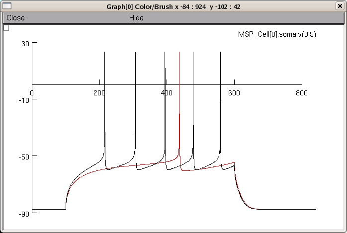
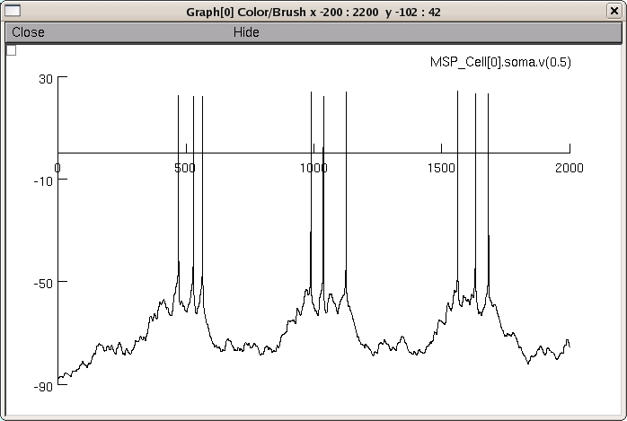

This is the readme for the Nucleus Accumbens MSP Cell model from: Wolf JA, Moyer JT, Lazarewicz MT, Contreras D, Benoit-Marand M, O'Donnell P, Finkel LH (2005) NMDA/AMPA ratio impacts state transitions and entrainment to oscillations in a computational model of the nucleus accumbens medium spiny projection neuron. J Neurosci 25(40): 9080-9095. Abstract: We describe a computational model of the principal cell in the nucleus accumbens (NAcb), the medium spiny projection (MSP) neuron. The model neuron, constructed in NEURON, includes all of the known ionic currents in these cells and receives synaptic input from simulated spike trains via NMDA, AMPA, and GABAA receptors. After tuning the model by adjusting maximal current conductances in each compartment, the model cell closely matched whole-cell recordings from an adult rat NAcb slice preparation. Synaptic inputs in the range of 1000-1300 Hz are required to maintain an "up" state in the model. Cell firing in the model required concurrent depolarization of several dendritic branches, which responded independently to afferent input. Depolarization from action potentials traveled to the tips of the dendritic branches and increased Ca2+ influx through voltage-gated Ca2+ channels. As NMDA/AMPA current ratios were increased, the membrane showed an increase in hysteresis of "up" and "down" state dwell times, but intrinsic bistability was not observed. The number of oscillatory inputs required to entrain the model cell was determined to be approximately 20% of the "up" state inputs. Altering the NMDA/AMPA ratio had a profound effect on processing of afferent input, including the ability to entrain to oscillations in afferent input in the theta range (4-12 Hz). These results suggest that afferent information integration by the NAcb MSP cell may be compromised by pathology in which the NMDA current is altered or modulated, as has been proposed in both schizophrenia and addiction. Usage: 1. Compile the mod files in the directory by invoking nrnivmodl (unix/linux)or dragging the folder to mknrndll (Mac OS X), or running mknrndll and changing directory to the expanded folder and making the nrnmech.dll (mswin). 2. Run the model by typing "nrngui mosinit.hoc" (unix/linux), or dropping mosinit.hoc on the nrngui (MAC OS X), or double clicking the mosinit.hoc file (mswin). The default run will be a current injection evoking one action potential from the model.This reproduces a trace in Fig 1D where the injected current=0.248 nA. If you would like, you can change the current to 0.271 nA in the PointProcessManager window by selecting Show->Parameters and typing the new value under amp. If you select Keep Lines in the graph window and rerun, after changing the color of the new trace to black you should get the following graph:  3. In order to generate an up and down state, turn on "play netstims" at the bottom of the cell settings window. Then hit init and run again, and you should get the response to the preprogrammed afferent input. The window size should be reset to 2000 msec for this run:  These model files were supplied by John Wolf. 20120131 cadyn.mod caldyn.mof solve methods updated to derivimplicit from euler as per http://www.neuron.yale.edu/phpbb/viewtopic.php?f=28&t=592